珍寺的篠栗霊場巡り
34番宝山寺
先程の紅葉ヶ滝薬師堂のすぐ隣にある34番宝山寺。
ここは薬師堂からさらに石段を上った奥にある。
いきなり現れるのは賽の河原。
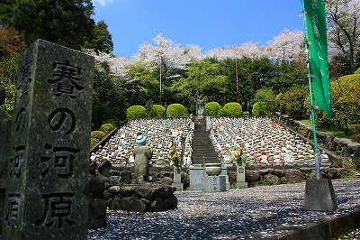
ひな壇状に並んだ合掌する水子地蔵がずらりと並ぶ。
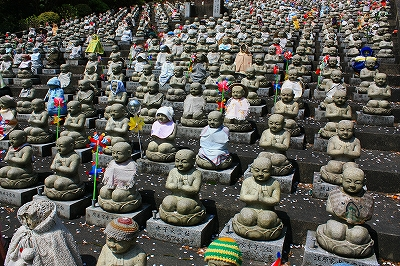
それぞれに違った帽子や前掛けが奉納されている。
地蔵を建立した人が奉納しているのだろう。
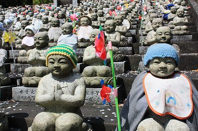 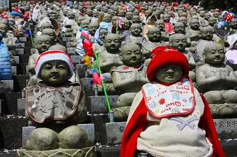
満開の桜の下、むせ返るような濃密な死の匂いに満ちていた。
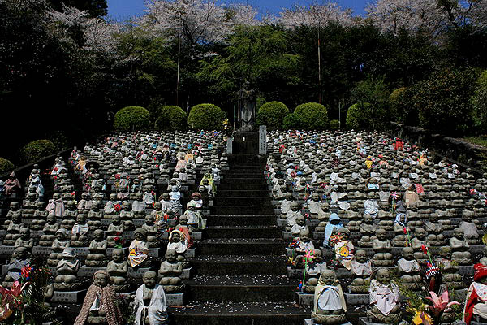
水子地蔵の前にはお地蔵さんと鬼と子供の賽の河原コンボが。
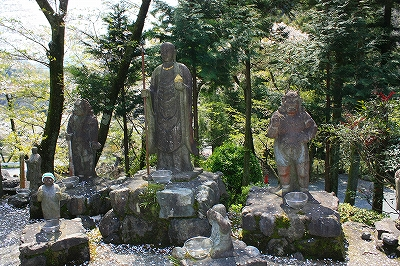 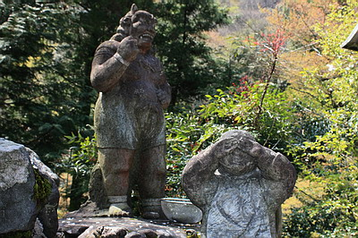
もちろん子供はミーミー泣いちゃってます。
で、それを苛める鬼。コンクリっぽいけど石像です。
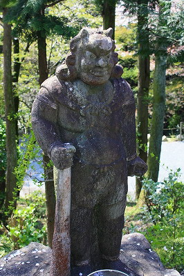 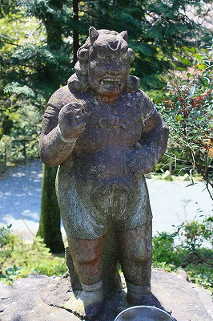
実は篠栗は石彫のレベルが高い。
大量の、しかも色んな種類の石像を地元の石工が作るので自然とレベルが上がっていったのだろう。
そういった意味では美術彫刻とは別の歴史を歩んできた石工による民間彫刻の壮大なる実験場でもあるのだ。
お腹がすいたので境内の食堂で遅いランチつかうどんを食す。
食堂のお土産コーナーにあった般若心経ハット。欲しいけど、篠栗でしか被れないなあ〜。
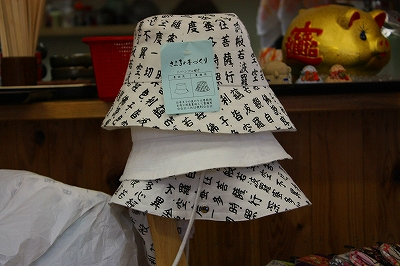
で、トイレ。ちゃあんと烏枢沙摩明王に賽銭が。
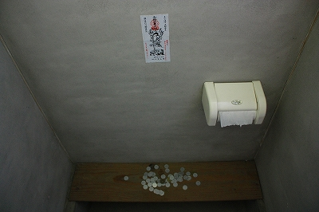
で、本堂。
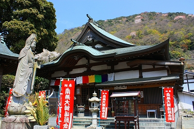
ここは34番の札所であると同時に隣の紅葉ヶ滝薬師堂の納経所も兼任している。
境内には比較的新しい石仏が所狭しと並んでいる。
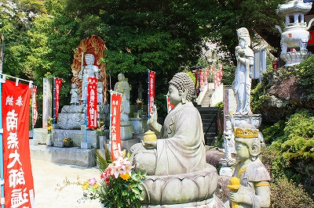
地元に腕のよい石工が多いとはいえ、最近は中国製の石仏が多いようだ。
このように中国製の出来合いの石仏ばかりが奉納されていくと、腕のよい石工は自然と消えていってしまう。
今、日本中で起きている技術の空洞化現象の一旦がここ篠栗でも確実に起こっているのだ。
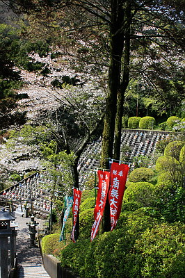 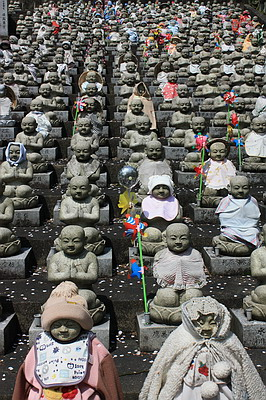
帰りの下り道から水子地蔵を眺める。
暖かい春陽の下、現実離れした気分になってくる。
次の霊場にトライアル！
珍寺的篠栗霊場巡りTOPへ
珍寺大道場 HOME